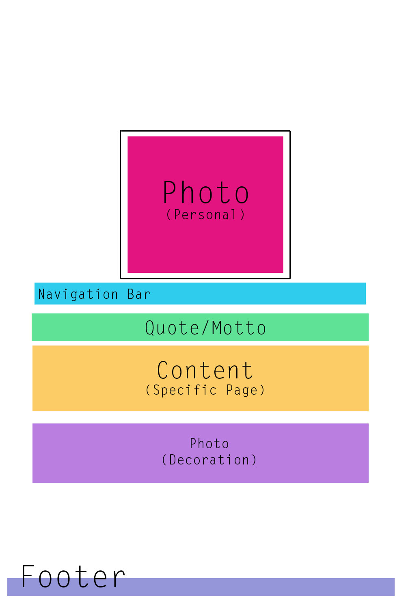

The design I would like to set for my final project, I would prefer to be quite similiar to my current design. I am working to build a personal page I can use for both information on myself and for business, as well as showcasing the type of work I do for freelance jobs. My goal is to have a fully functional and presentable page with all attributes by the end of the class. I would very much like my design to be very modern and simplistic. I envision as little information possible to each page, but enough to get across all the information that is needed in an organized and professional manner.

My sorting for this page is quite similiar to my working page. I feel the reason for this is because I used the technique of card sorting before I really began my design of my personal site. In my design, I wanted the focus to remain centered and collected in the middle of the page. I use horizontal columns to contain each element so the content of my page stays compilled and neatly organized. There isn't a need to search around the page for what you are looking for because all of the content is in a group, organized by a horizontal navigation bar. I use a few images for decoration and to bring an aspect of life into my page and I'd also like to add a footer at some point, to hold copyright claims and other links of that sort.
When a few helpers of mine rearranged my cards, most found that this way was indeed the cleanest way to organize a page like this one. We discussed how grouping any of the elements vertically or moving the photographs, would create a more "loose" look to the page, which would be the opposite of what I'm trying to create. One of my partners suggested making the content in the form of squares instead of rectangles, so we tried this set up as well. With only 5 main areas of content, an odd number, it was difficult to arrange them in a logical manner, so we were directed back to the horizontal set up.